|
Vulcan, 1996 yýlýnda Ýspanya'da, Catalunya üniversitesinden profesör bir grup ve Cimme araþtýrma merkezi ortak iþbirliði ile geliþtirilen döküm simülasyon yazýlýmýdýr. Vulcan, imalattan sonra oluþabilecek sýkýntý ve hatalarý önceden tespit etmek amacýyla döküm endüstrisinde kullanýlmaktadýr.
Vulcan, döküm firmalarýnýn imalatta karþýlaþabilecekleri hatalarý üretime geçmeden tespit etmek için kullandýklarý ileri düzey döküm simülasyon yazýlýmýdýr. Bu sayede imalatta yapýlan tüm prosesleri Vulcan içerisinde uygulayarak, makine çalýþmasýna gerek duymadan hata tespitlerini kolayca yapabiliriz. Firmalar bu sayede malzeme, iþçilik, zaman kayýplarýný en aza indirmiþ ve müþteri memnuniyetini de saðlamýþ olurlar.
Sonlu elemanlar mantýðý ile çalýþan Vulcan, FE (Finite Element) altyapýsý sayesinde döküm proseslerini simüle eder. Vulcan döküm simülasyon yazýlýmýnda tüm döküm teknolojilerini uygulayabildiðimiz gibi; CAD altyapýsý ile "import" ettiðimiz datalar üzerinde geliþmiþ CAD fonksiyonlarýný kullanabilir, basit CAD parçalarýmýzý da Vulcan içerisinde oluþturabilme imkanýna sahibiz oluruz. Ayný zamanda, analiz sonrasý parça üzerinde oluþan stres ve gerilmeleri de Vulcan Termal analiz modülü ile tespit edebiliriz.
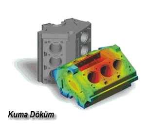Vulcan tarafýndan desteklenen döküm teknolojileri:
- Kum Döküm
- Kokil Döküm
- Alçak-basýnç döküm
- Yüksek-basýnç döküm
FE (Finite Element) teknolojisi ile problemsiz mesh ve
daha gerçekçi analiz sonuçlarý:
Vulcan; FE teknolojisi olarak adlandýrýlan üçgen mesh yöntemini kullanarak mesh atma iþlemlerini gerçekleþtirir ve parçanýzý analiz eder. Üçgen mesh yöntemi ile modelleriniz üzerinde daha hassas mesh atabilir ve ayný zamanda mesh üçgen boyutlarýný, hassasiyetini, bölgesel mesh yöntemlerini Vulcan içerisinde kullanabilirsiniz.
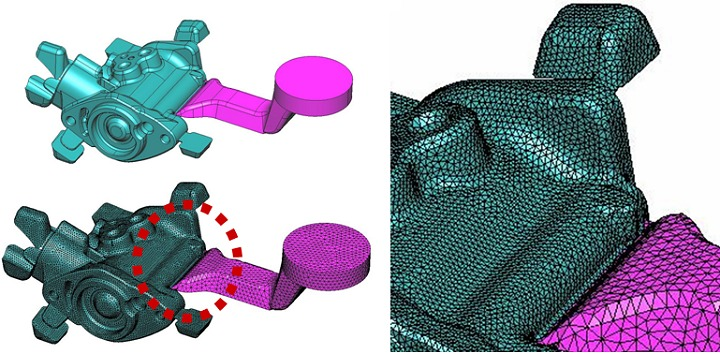
Vulcan ile simülasyon sürelerini kýsaltma:
Vulcan'da uygulanan bu mesh yöntemi sayesinde hesaplama yapacaðýnýz simülasyon sürelerinizi kýsaltabilir, ayný parça üzerinde ayný mesh deðeri ile farklý mesh yöntemleri uygulanarak kolayca element sayýsýný azaltabilirsiniz.
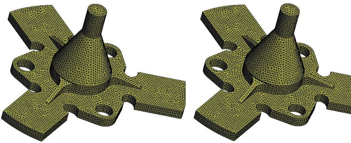 |
Mesh deðeri: 1
Element sayýsý: 166.293 |
Mesh deðeri: 1
Hacim mesh deðeri: 10
Element sayýsý: 41.902 |
Parçanýzýn element sayýsý simülasyon süreleri hakkýnda önceden tahminde bulunmanýza yar
dýmcý olur. Vulcan'da minimum element sayýsý ile kýsa sürelerde hesaplama yapabilirsiniz.
Vulcan CAD fonksiyonlarý sayesinde datalarýnýz üzerinde deðiþiklik yapabilme imkaný:
Kolay kullanýmlý bir arayüze ve CAD fonksiyonlarýna (data onarma, kenar kopyalama, formlu yüzey oluþturma vs..) sahip Vulcan içerisinde model deðiþikliklerini Vulcan ile analiz aþamalarýný sizi yönlendiren menüler sayesinde daha kolay ve hýzlý bir þekilde yapabilirsiniz.
Her döküm prosesi için;
- Basýnçlý döküm; parça, kalýp, maça...
- Kum döküm, kokil döküm; parça, kalýp, maça, çýkýcý, besleyici, soðutucu vs...
imalattaki uygulamalar gibi birebir Vulcan'da import edilebilir ve her biri için mevcut malzeme kütüphanesinden malzeme tayini yapýlabilir.
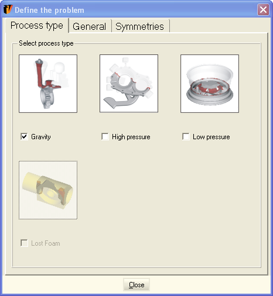
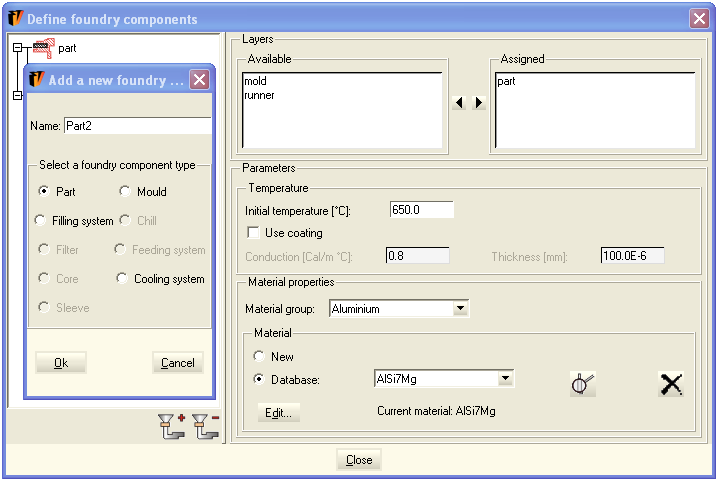
Vulcan ile IGES, Parasolid, STL, ACIS, DXF, 3DStudio, Rhino vs. uzantýlar import edilebilir;
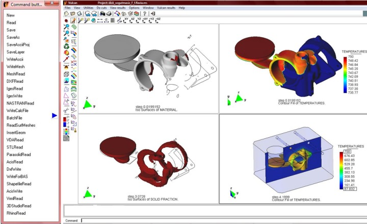 |
Solda: Import edilebilen dosya uzantýlarý: |
Saðda: Vulcan simülasyon görüntüleri |
Vulcan tarafýndan desteklenen proses analizleri:
- Çevrim analizi
- Dolum simülasyonu
- Katýlaþma analizi
- Soðutma analizi
- De-molding
- Stres-deformasyon analizi
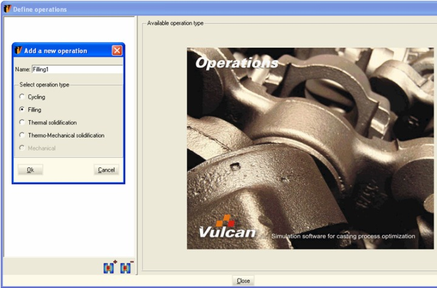
Simülasyon sonuçlarý:
Parça üzerinde dolum esnasýnda oluþacak türbülans noktalarý tespit edilerek yazýlýmýn önerdiði kritik noktalara cep yerleþtirilerek parça ve kalýp optimizasyonu yapýlýr.
Yüksek-basýnç döküm örnek simülasyonlar:
Örnek-1:
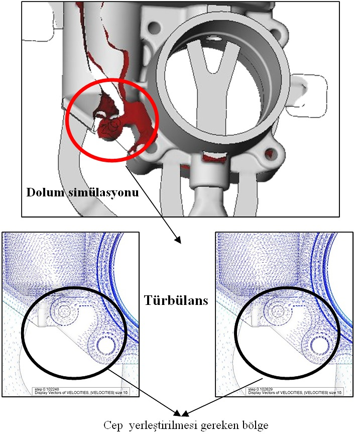
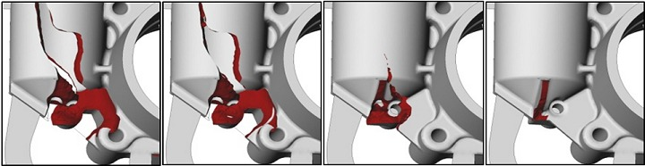
Dolum aþamalarý
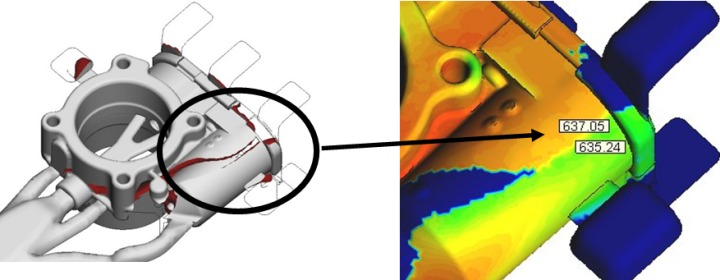
Soðuk birleþme
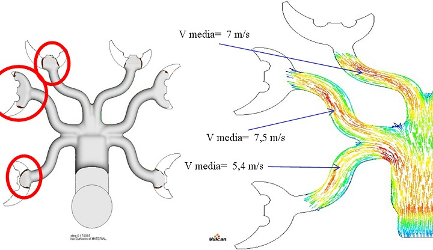
Malzeme hýzlarý
|